Aji has come to participate in the Kerala School Arts Festival being held
in Thrissur district. His family is also with him. Given below is the layout
of the venue with them.
5
A
MG Road
Palakkad Road
B
C
D
T
HRIS
SU
R
SW
A
R
A
J
RO
U
N
D
E
A
Railway station
B
Bus stand
C
Programme Committee
Office
D
Dining hall
E
Govt. HSS Thrissur
Let’s Draw and Read
Page 66
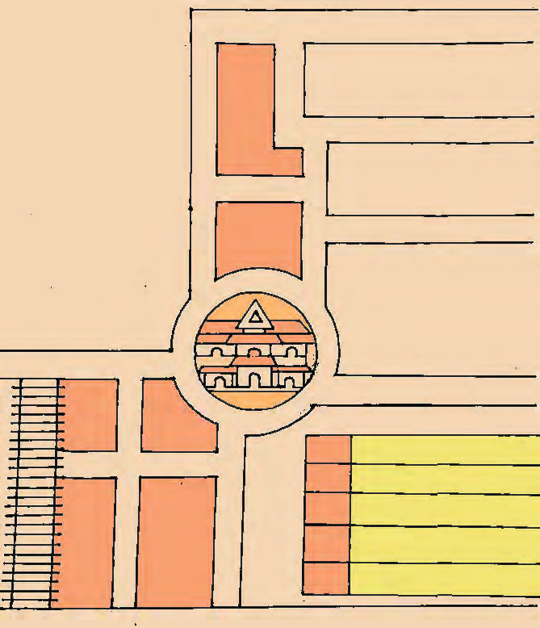
Page 67

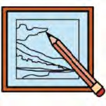
Having travelled from the railway station, Aji and his family have now
come near the Programme Committee Office which is close to the Swaraj
Round. Aji's programme is scheduled to be held at Govt HSS Thrissur.
•
In which direction should Aji go to reach the venue quickly, from
the Programme Committee Office?
•
Can you find where the dining hall is, by checking the layout?
•
In which direction should one travel from Govt HSS Thrissur to
reach the dining hall?
What we familiarised above is the layout of the venue of the Arts Festival.
Have you realised that a sketch and plan are prepared while constructing
a new house or building? While preparing the plan of buildings, it also
includes exact measurements. But when sketches are prepared, measurements
may not be exact.
Haven’t you seen the layout maps showing the location of buildings,
displayed in front of some institutions? Are such layouts made only
to understand the direction?
In which direction is the door of the classroom?
Where are the windows located?
Where is the Blackboard/Whiteboard fixed?
How about making a sketch of your classroom?
Lets draw and read
67
Page 68
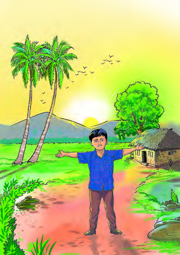
68
Social Science Class V
Check the sketch that each of you prepared. Are they all of the same? Did
you feel any difficulty to find direction?
How to find directions in a place?
We consider the direction from where the sun rises to be the east.
Aji is standing near his house
facing the rising sun.
•
In which direction is Aji
facing?
…………………………………..
•
To which direction has Aji stretched
out his right hand? What about his
left hand?
…………………………………..
•
Which direction is indicated by
Aji’s shadow?
…………………………………..
•
In which direction is Aji
facing in Picture B?
…………………………………..
•
To which direction is Aji’s right
hand stretched out? What about
his left hand?
…………………………………..
•
Which direction does Aji’s shadow
indicate?
…………………………………..
•
Which is the direction opposite to
the direction that Aji faces?
…………………………………..
Picture A
Picture B
Page 69

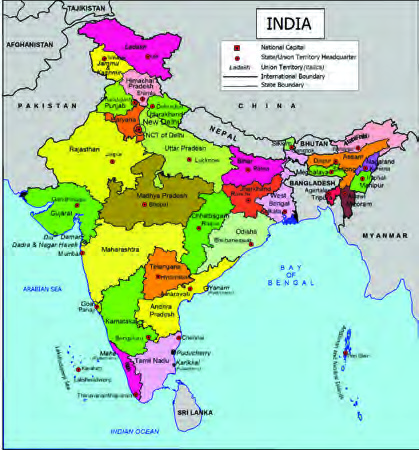
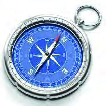


69
Let’s Draw and Read
Look at the map, hanging on the wall? How do you find the direction on
this map?
Haven't you learned how to find the direction based on the position of
the sun? A compass is commonly used to find the direction. Now a days
we also use mobile apps to find direction.
What are the things that we should pay attention to while drawing the
sketch on a paper or in a book based on the direction?
Directions on the Map
A map will usually have a sign
indicating the direction. A sign
indicating the north direction
can be seen at the top of the wall
maps. The bottom of the map
points to the south; the right side
of the map points to the west and
the left side to the east.
Compass
A compass is the instrument used to find
the direction. This instrument is based
on the principle that a freely moving
magnetic needle will remain in the
north-south direction. A specially marked tip of
the needle indicates north. This instrument has
been used by sailors since ancient times to find
direction on sea voyages.
Map not to scale
Find out the north direction of your classroom. Now, put any
symbol indicating direction as shown below on the top right side
of the paper in which you prepare the sketch of your classroom.
Shall we prepare the sketch of our classroom based on direction?
Page 70
70
Social Science Class V
N
Haven’t you completed the
sketch. Prepare an index for
things such as windows,
door, table etc. as given
below and include it in the outline.
D.
Door
T.
Table
W.
Window
B.B
Blackboard
WB.
Whiteboard
B.
Bench
B.B
T
B
B
B
B
B
B
B
B
W
W
W
D
The sketch of Aji’s classroom
Symbols commonly used to indicate direction on maps:
Haven't you identified the direction in which the door of your classroom
is located? In which directions are the windows loacated? In which
direction has the table been placed?Now let's draw the sketch of the
classroom.
D. Door
B.B Blackboard
T. Table
W.
Window
B. Bench
The sketch
prepared by Aji
for his class room
is given below.
Observe.
Now check the
sketches drawn by
everyone. All the
sketches are the
same, aren't they?
Index
Page 71
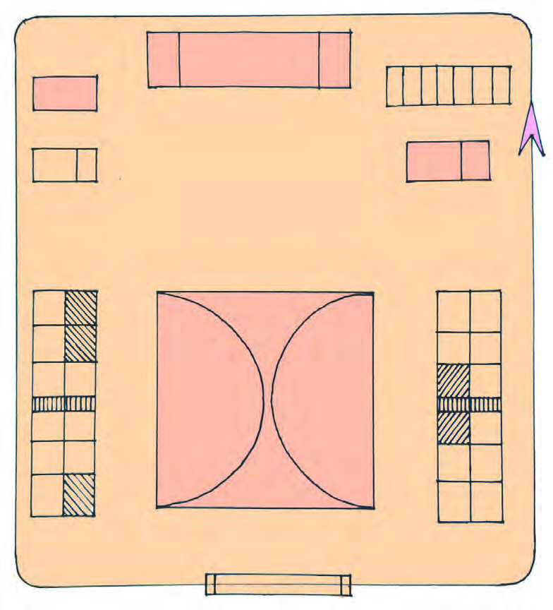

71
Let’s Draw and Read
C1
C2
C7
C10
C19
C11
C18
C12
C13 C14
C17
C15
C16
C3
C8
C4
C5
C6
Lab
Auditorium
Toilet complex
Kitchen and
Dining
Library and
Reading Room
Staff
room
Staff
Room
Office
Entrance Gate
N
Basketball court
Store
C9
Rest
Room
To which direction of the basketball court is the
office building located?
To which direction of the basketball court is the
entrance of the school located?
To which direction of the toilet complex are the
library and reading room located?
To which direction of the building with the store
room is the kitchen located?
To which direction should one move from the
auditorium to exit through the entrance gate?
The sketch of Aji’s school is given below. Observe the sketch and complete
the table.
Page 72
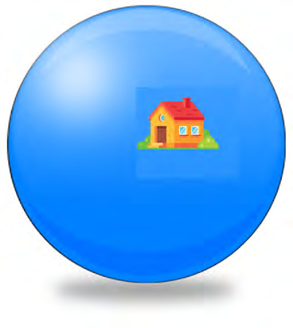
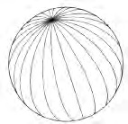
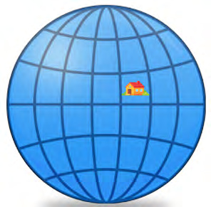
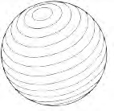
72
Social Science Class V
horizontal lines
vertical lines
Haven't you marked position of the bench, desk, and blackboard/white
board in your classroom on the sketch. How do you tell where you sit in
the classroom?
• Second on the first bench
• First on the last bench
• ………………………
• ………………………
If so, you may tell the position of each of you in your classroom.
How can we locate a place on earth?
Observe the picture of the ball given
below.
Did you see the picture of a house
affixed on the ball? How do we
determine the exact position of the
house?
Top, bottom, centre, on one side.
Which of these is correct?
It is difficult to determine the exact
position of an object on a spherical
surface. How can we find the exact
position of the house affixed on the
ball?
Shall we draw lines vertically and horizontally on the ball as shown in
the picture?
Page 73
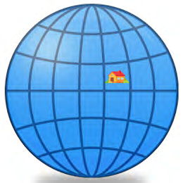
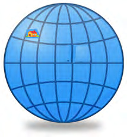
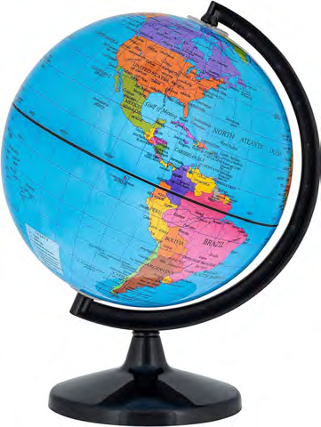

73
Let’s Draw and Read
B
C
D
E
1
2
3
4
5
6
7
8
A
B
C
D
E
1
2
3
4
5
6
7
8
A
A
B
Globe and Map
A globe is a spherical model of the earth. When the features of the earth’s surface
are drawn on a flat surface, we can develop a map.
Now write down the position of this
house on the ball.
Now, if we give alphabet and number to each
line, won't you be able to find out the exact
position of the house by spotting the lines
between which it is located?
Observe the globe.
Look at the line marked in red on the
given globe. This is the equator. This line
divides the globe into two hemispheres.
In the given figure, what is marked A is
the Northern Hemisphere and B is the
Southern Hemisphere. Observe the
equator and other circular lines drawn
above and below, parallel to it. These are
the lines of latitudes. Don't you see the
semicircular lines drawn perpendicular
to the lines of latitudes or latitudinal
lines? These are longitudinal lines or lines
of longitudes. The location of a place on
the earth is determined based on these
imaginary lines.
Observe the globe and identify the
characteristics of latitude lines and longitudinal lines.
Page 74
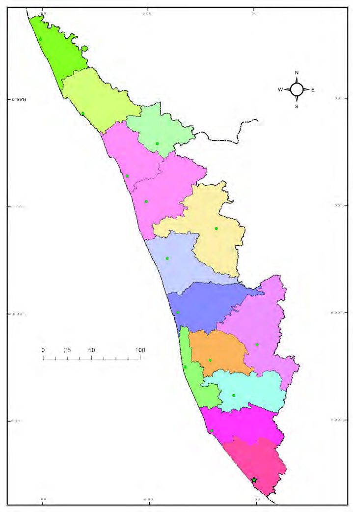
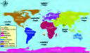
74
Social Science Class V
A
B
C
Thiruvananthapuram
Thrissur
Palakkad
Malappuram
Kozhikode
Waynad
Kannur
Kasaragod
Ernakulam
Idukki
Kottayam
Alappuzha
Pathanamthitta
Kollam
Karnataka
Tamil Nadu
Map not to scale
Observe the map of Kerala.
World Map
Globe
Lakshadweep sea
Kerala
Political Map
km
Index
State boundary
District boundary
Capital
District headquarters
Page 75

75
Let’s Draw and Read
A
Title
Kerala - Political Map
B
Direction
C
Index
- - - - State boundary
Capital
District boundary District headquarters
Index
- - - - - - - State boundary
District boundary
River
Airport
Port
Railroad
National Highways
State highways
District headquarters
Capital
Check out the titles given to the different maps in the Social Science
lab of your school.
List the coastal districts to the north of Thrissur and the ones to
the south of Thrissur.
Which state lies to the east of Kerala?
Note that the given map is labelled with letters A, B, C. They are the title,
direction and index of the map respectively. These are the essential
components of a map. The Map reading is done by using these components.
The title is generally given at the top of the map. The title refers to the
content of the map. Locate the title on the given map.
When the sketch of the classroom and school were made, didn't we give
the symbols indicating the directions? Find the symbol to identify directions
in the given map.
The index given in a map helps to identify the features of the map. Find
the index in the given map.
Observe the index given on the map of Kerala in your Social Science lab.
Page 76


76
Social Science Class V
Examine the map of Kerala and find and draw the symbols indicating
features of the earth’s surface in the given table.
Index
Symbol
Road
Railroad
River
Port
Which colour is used to represent water bodies in the globe
and the maps?
Cartography
Cartography is the branch of science that deals with the preparation
of maps. The person who prepares maps is known as Cartographer.
Survey of India is the central government agency responsible for
producing, verifying and publishing maps in our country. Its headquarters is at
Dehradun, Uttarakhand.
Observe the map of Kerala in the Social Science lab of your
school and complete the worksheet.
The southern most district of Kerala
The northern most district of Kerala
The district which shares its border with two states
The direction in which the Bharatapuzha flows
from east to ……...
Direction of railway line from Kasaragod to
Thiruvananthapuram
from north to ………
The neighbouring states of Kerala
Note that in the given map of Kerala (page 74) different colours are given
to differentiate between various districts. Similarly, different colours are
used to represent the features of the earth's surface on maps.
Page 77
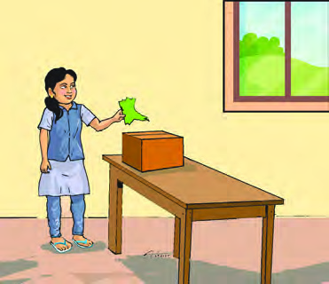
77
Let’s Draw and Read
Let’s find the districts
With the help of the teacher, take
a printout of the political map
of Kerala in A3 size (colour)
card. (The names of the districts may be
omitted.) Carefully cut out each district.
Keep the cut-outs in a box. Now divide the
class into groups. One person from each
group may come and take one cutout from
the box. Identify the district from the shape
of the cutout and say the name loudly.
Prepare district ID cards and display them in the classroom.
ID card of the district
Now, shall we prepare an ID card for the districts that each group got?
What can be included in the ID card of a district?
• Name of the district
• Location
• Neighbouring State/Districts
• Airport/Port, Railway, Seashore
• Other features
Page 78
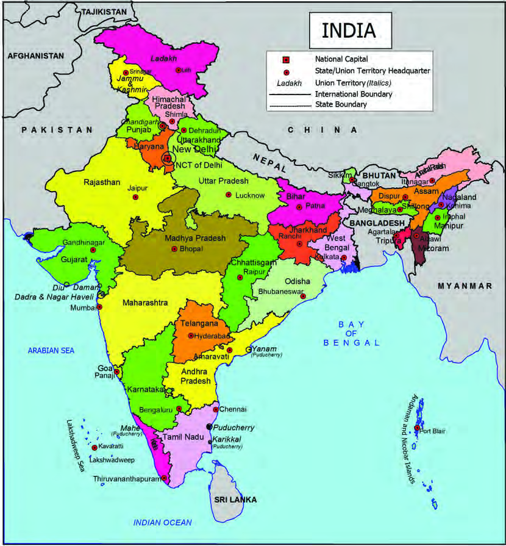


78
Social Science Class V
Kerala is a state in India. Do you know how many states and
union territories are there in India?
Prepare a list of the states, their capitals and union territories of India.
Map not to scale
അസം
You are now familiar with the basic concepts of map reading. Now let's
observe the map of India and find out information.
Page 79


79
Let’s Draw and Read
Complete the table given below by observing the map of India
showing borders, states, union territories, neighbouring countries, etc.
Hint
Facts
The sea to the east of India
Bay of Bengal
The sea to the west of India
Arabian Sea
The capital of India
………….
The northernmost Union Territory of India
………….
In which part of India is Arunachal Pradesh situated?
………….
The neighbouring country to the south of India
………….
The southernmost union territory of India
………….
Neighbouring countries of India
Pakistan
………….
………….
Check out the note prepared by Aji.
Strips with names of Indian states are deposited in a box. Students
can form group of three. One from each group can draw a strip from
the box. Prepare a note with the help of Atlas and Map about the state
mentioned in the strip. What information can be included in the note?
•
Name of the state
•
Capital
•
Neighbouring countries
•
Neighbouring states
•
Major cities
•
•
•
Uttar Pradesh
My location is in the northern part of India. There is a country on my
border. That is Nepal. Also, I share my borders with eight states of India.
I am often referred to as the ‘Sugar Bowl of India’ as I produce a large
quantity of sugarcane. Kathak is a dance form that belongs to my place.
You might have heared the names of my major cities such as Kanpur,
Lucknow, Varanasi, Agra, Allahabad etc. Sarnath, known through the
Ashoka pillar, spreads my fame around the world.
Page 80
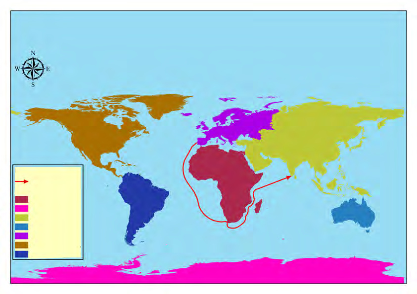
80
Social Science Class V
Vasco da Gama set out in search of India, leading a fleet of
four sailing ships with 170 sailors from the port of Lisbon,
Portugal. He travelled south-east with the help of the
winds and reached the southernmost tip of Africa. He then
travelled northwards along the east coast of Africa and
reached the port of Malindi. With the help of the monsoon
winds, they reached Kappad near Calicut on the west coast
of India on 20 May 1498. This adventurous journey made by Vasco da Gama
and his companions, covering thousands of kilometers, has made a mark in
history.
Through which oceans did Vasco da Gama make his voyage and reach
India from Europe? Find these oceans by observing the world map.
•
•
Which are the other oceans?
•
•
•
Read the note about the voyage of the Portuguese traveller Vasco
da Gama to India.
Arctic Ocean
Indian
Ocean
Australia
South
America
Africa
Europe
Asia
Atlantic
Ocean
North
America
Pacific
Ocean
Pacific
Ocean
Arctic
Ocean
Index
Vasco da Gama’s
sea route
Continents
Africa
Antartica
Asia
Australia
Europe
North America
South America
Observe the sea route of Vasco da Gama during his voyage to India.
Antartica
India
Map not to scale
Page 81


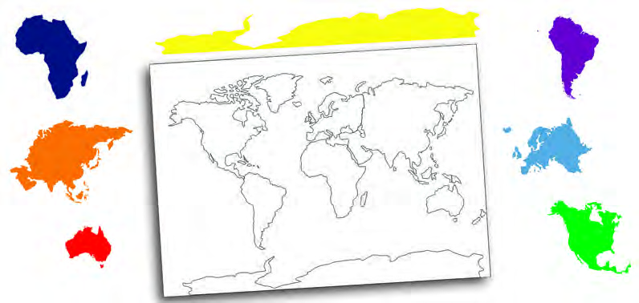
81
Let’s Draw and Read
Observe the map and globe to identify the continents.
•
Which continent is our country, India a part of?
•
Most of the continents are surrounded by oceans. Which
continents are surrounded by oceans?
Africa
Asia
Australia
South America
Europe
North America
Observe the given world map. The colours of the respective continents
are given. Now, give the corresponding colours of the continents to
their images in the map. After giving the colour add the name of the
continents also.
Antartica
Are all these oceans lying close to each other.
Observe the globe and find out the largest ocean.
In the given world map, don't you see vast land areas along with oceans?
Such vast stretches of landmasses are called continents.
Map not to scale
Page 82


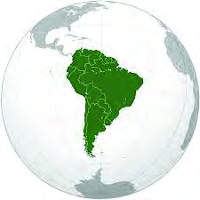
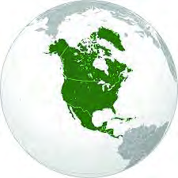
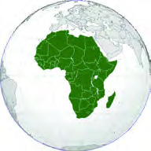
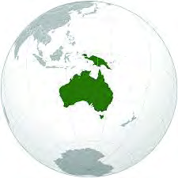
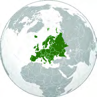
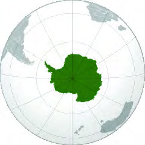
82
Social Science Class V
Worksheet
Features
Continent
Continents found to the west of the Atlantic Ocean ................. , ..................
Continent to the east of the Indian Ocean
......................
The largest continent
......................
The continent found between the Atlantic Ocean
and the Indian Ocean
......................
Identify and name the continents
Have you familiarised with the continents? Now, you may divide into seven
groups and give each group the names of the continents. Each group should use
an atlas and a globe to prepare an ID card of its respective continents.
Complete the worksheet with the help of an Atlas and a World Map.
Page 83

83
Let’s Draw and Read
Kerala - Map Reading Quiz Competition
Topics
•
Tourist destinations
•
Rivers
•
Ports
•
Lakes
•
Airports
•
Places of historical importance
•
Celebrations
•
............................................
Maps have great significance in human life. Different types of maps are
used in fields such as geographical studies, defence, tourism, administration
and transport. When natural disasters like floods, land slides and other
cetastrophic events occur, maps and route maps are widely used to reach
quickly in such areas and engage in relief operations.There are many
occasions in everyday life where we need to depend on map reading.
Map reading has become an essential factor to build up human life in the
modern world.
1. Prepare a sketch of your school with the help of your teacher. Organise
an exhibition of the sketches you prepared.
2. Observe the map of Kerala and list out the major tourist destinations. By
using the posibilities of internet, find out the fastest route and distance
from your current location to the tourist spots you want to visit.
3. Draw the sketch of India on a chart. Mark states, capitals and union
territories. Give different colours to states and union territories. Display
the prepared charts in the class.
4. Organise 'Kerala-Map Reading Quiz Competition' with the help of digital
technology as part of Kerala Day celebrations on 1st November. What
topics can be included in the quiz?
Extended Activities